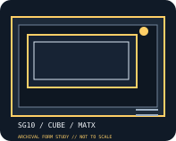

[ IDENTIFIED ENCLOSURE // SG10 ]
SilverStone Sugo SG10
A compact 23 L Micro-ATX cube with a front-to-back layout; GPU, PSU length and top radiator capacity share tightly bounded space.

MODEL / FIT NOTE: The SG10 differs from the taller SG12 and older SG08; verify the PSU-length/GPU-length pairing rather than treating each independent maximum as simultaneous.
Mechanical specifications and fit
| Model and revision | SilverStone Sugo SG10 (chassis model SG10). |
|---|---|
| Dimensions / volume | 220 × 295 × 354 mm (W × H × D); approximately 23.0 L. |
| Motherboard / slots | Micro-ATX or Mini-ITX motherboard; four expansion slots. |
| Power supply | Standard ATX/PS2 PSU, up to 180 mm long; shorter PSU preserves clearance for a long graphics card. |
| Graphics-card clearance | Up to 310 mm long with a shorter PSU; 279 mm maximum with a 180 mm PSU. Four-slot area supports a dual-slot card arrangement only. |
| CPU-cooler clearance | CPU cooler up to 165 mm high. |
| Radiator clearance | Top radiator support up to 240 mm; radiator/fan stack can constrain motherboard and drive clearance. |
| Drive clearance / bays | Two external 5.25-inch bays; internal 3.5-inch and 2.5-inch mounts (mixed configurations share brackets). |
Compatibility notes
Published maxima are envelopes, not a guarantee that every maximum fits simultaneously. Measure the selected card, PSU body and cable exits, CPU cooler and radiator/fan stack together; confirm drive-cage position and panel closure before purchase or assembly.
- Install only the motherboard standoffs matching the supported board layout and verify no unused standoff touches the PCB.
- Check power-plug bend radius, graphics-card thickness and intake clearance against the exact panel and drive-bracket configuration.
- Use the cited manufacturer manual for installation sequence and revision-specific bracket placement; do not infer part interchangeability from a shared product family.
Manufacturer specifications and manual
- SilverStone SilverStone Sugo SG10 official product specificationsManufacturer product page for the identified chassis model and its published mechanical envelope.
- SilverStone SG10 official installation manual (PDF)Manufacturer-hosted model manual for assembly, bracket positioning and fit verification.